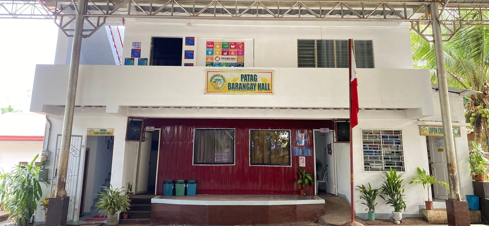

BARANGAY PATAG
Opol, Misamis Oriental
Opol, Misamis Oriental
Ang aming kasaysayan, at hangarin bilang isang pamayanan
Noong 1944: Ang Patag ay nagsimula bilang isang maliit na sitio kung saan ang mga Hapones ay naglagay ng kampo sa gitna ng kaguluhan ng Ikalawang Pandaigdigang Digmaan.
Noong 1950: Sa pamamagitan ng Republic Act No. 524, ang sitio ay naging opisyal na barangay. Ang orihinal na pangalan na "Patay" ay nagbago sa "Patag" upang mas maging positibo, kaaya-aya, at makabago para sa komunidad.
Mula sa pagiging payak na sitio sa kasaysayan ng Opol, ang Patag ay patuloy na sumulong upang maging isa sa mga pangunahing sentro ng lokal na ekonomiya at kultura sa bayan.
Ngayon: Ang Barangay Patag ay patuloy na lumalaki at umuunlad, na nag-aalok ng tapat na serbisyo, proteksyon, at magagandang oportunidad sa lahat ng aming mga residente.

Opisyal na infographic ng kasaysayan ng Barangay Patag, inilathala para sa 76th Araw ng Patag.
Location: Opol, Misamis Oriental.
Vision: Isang maunlad, mapayapa, at resilient na barangay.
Mission: Maghatid ng tapat at mabilis na serbisyo publiko para sa lahat.